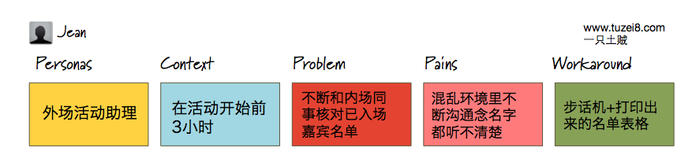
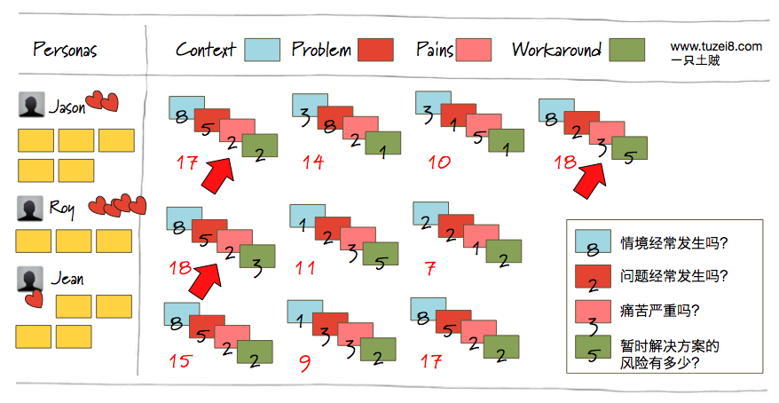
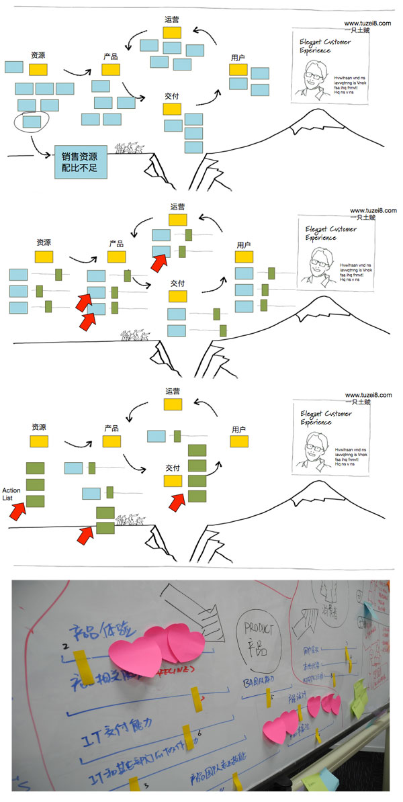
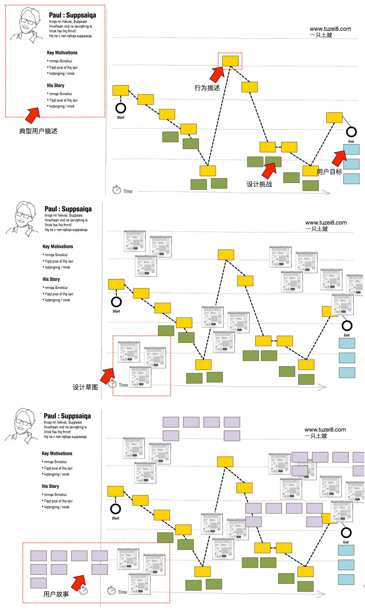
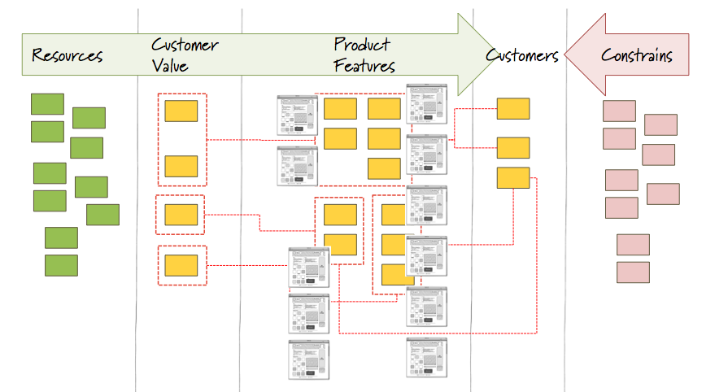
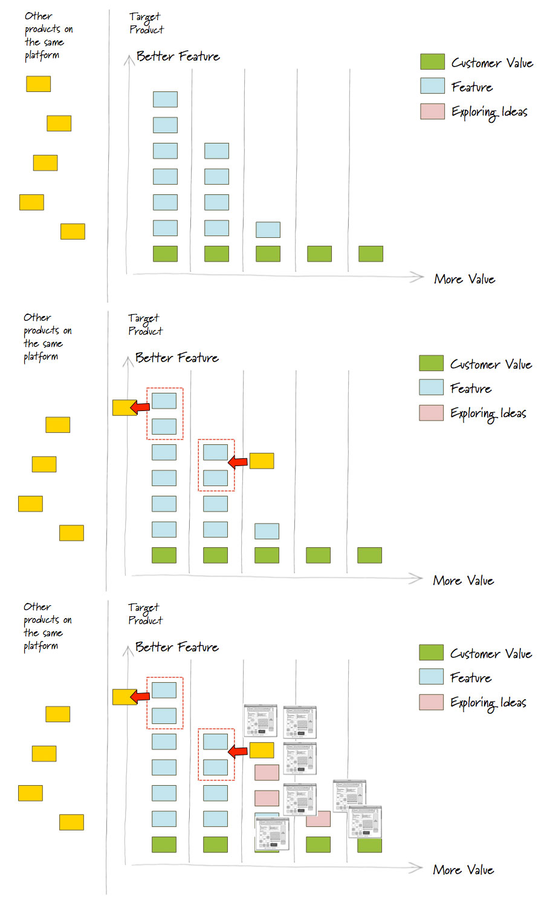

和以往的那种简单粗暴的“头脑风暴”，或者索然无味的“需求评审”不同，敏捷体验设计中的过程永远是开放的，强调在和客户的互动中识别需求，并产出设计，最终对项目交付内容达成共识。过去的五年里，我参与了几十次和客户的设计工作坊，这里把我经常使用的五种设计工作坊形式分享给大家。
模版1：用户价值定义
用户价值的定义是任何软件体验设计的基础──到底解决了什么用户的什么问题。对于问题的定义越准确和清晰，越能够对产品或特性设计方向达成一致，当所有的客户都认为，解决用户A在情境B下遇到的问题C是本次交付的核心目标，那么自然，与解决这个问题之外的任何设计、功能、甚至讨论都应该放入低优先级。这个活动可以经常性进行，可长期保留这个用户价值板，将识别的用户问题放在板上统一进行管理和评价。
过程
- 梳理出典型用户放在画板的最左侧；
- 头脑风暴出用户可能遇到的问题；
- 对于每一个问题进行扩展──什么情境下出现这个问题？问题带来的痛苦是什么？为了解决这4. 个痛苦用户现在是怎么做的？
- 将每个问题进行扩展后再对每个维度进行数字评估──情境和问题发生的频度？痛苦程度？和临时解决方案的风险大小？
总结所有的问题，将数字相加，配合典型用户的优先级，梳理出最应该关注和解决的问题，再进入设计阶段。
元素解释

- 用户：谁会遇到这样的问题？
- 情境：在什么样的情境下会出现这样的问题？
- 问题：如何定义这个问题？
- 痛苦：因为这个问题的出现，会造成什么样的痛苦（直接或者间接）？
- 暂时解决方案：为了减轻这个痛苦，这个用户是怎么做的？
提示
- 尽量避免描述性的抽象表达，而尽量使用基于事实的语言，例如：表述痛苦时避免说“工作效率低下”而说“每天处理不必要的人工错误时间超过1小时”──更加基于事实的表达让设计师更加实质性体会到痛苦本身；
- 尽可能生动地表达情境，用简短的关键字描述出该用户遇到痛苦的实际情境；
- 使用数字进行估值时使用1，2，3，5，8数列进行估计，首先定义标准1的值，再进行比较，凭感觉；
演示

上图中红色箭头便是具体要进入细节设计的用户问题，当这些问题被解决，所产生的用户价值一定是在当前产品中价值最高的。
模版2：组织改进计划
做产品本身就是在做商业模式，而商业模式的基础是组织运作，在产品设计之前需要对组织现状进行了解，帮助客户寻找到为了达到产品愿景的目标组织级别还有什么地方需要改进，为接下来的产品设计做准备。
过程
1.使用“Tomorrow Headlines”的游戏让客户团队对未来产品或组织愿景达成统一认识，将达成统一认识的海报贴在画板的右上角，如演示中右上角所示；
2.使用一种运营模型收集对现状的描述（使用名词+形容词的表达），在演示中使用的是，资源-产品-消费者的价值传导模型，可以根据情况选择合适的模型；
3.将所有贴条进行归纳分组，梳理出一些维度，例如说：销售资源分配不足可归于“销售资源”维度。对每个维度使用滑块进行竞争力评价，越往右说明竞争力优势越大，越往左则反之；
4.找到竞争力最差的维度进行单独讨论，这些维度就是阻碍我们达到共同愿景的绊脚石；
对每个绊脚石头脑风暴出行动列表，在一定时间内进行改进，并制定责任人，定期进行反馈；
提示
- 这个活动可以用于任何级别的组织，只是愿景不同；
- 对于模型的使用可以自由抽象，大部分组织行为都可以抽象成，资源、活动（服务或产品）、服务对象、反馈等；
- 定期（每两周）对实现愿景的行动列表进行展示或验收，及时收集反馈，持续改进；
- 行动应该是准确和结果可验收的，“和销售团队达成对销售支持人数4人的共识”要比“找销售团队要人”要明确得多；
演示

模版3：客户体验地图
从客户(Customer)的角度出发，定义客户在完成用户目标过程中经历的步骤，在情境中发现客户的痛点，并将痛点转化成设计挑战，为接下来的设计活动做准备。在完成设计稿之后，从设计中梳理出来的用户故事也能被完整地展示在图板上，给团队完整的上下文，了解每个用户故事都是在解决哪个典型客户的什么问题，优先级也一目了然。
过程
1.将梳理好的典型客户放在画板最右边；
2.梳理出对于这个客户存在的用户目标；
3.用贴条展示出客户现在完成用户目标过程中经历的步骤；
4.在心情曲线上将所有步骤串联起来，心情越好贴条贴得越高；
5.分析心情最不好，即贴条位置最低的几个步骤；
6.对每个位置最低的步骤，梳理出设计挑战，尝试为客户解决其中的问题；
7.对设计挑战进行优先级分析，建立设计挑战墙进行设计；
8.将设计草图贴在设计挑战周围；
9.从设计草图中梳理出用户故事；
提示
- 从最核心的用户类型开始；
- 心情最低落的位置代表这个步骤中存在一个问题；
- 最完美的情况是寻找一个和典型用户最匹配的真实客户一起参与到这个活动中来；
- 有大量关于客户体验地图的资料可以参考：例如这里。
演示

模版4：产品全景图
这个实践帮助我们在全局的角度了解一个产品的全局，产品的目标用户是谁？提供的核心用户价值是什么？这些价值通过产品的哪些特性进行交付？产品背后的资源是什么？限制又是什么？各个元素之间是否有不匹配的情况？
好的产品规划是用户价值、功能特性、目标用户的完美结合，这个实践帮助我们发现那些不匹配的东西，例如目标客户不需要的用户价值；不被现有资源支持的功能；不能交付用户价值的功能；或者交付多余用户价值的功能。此外，这也可以成为每一个新特性的实验场，每个新功能都应该放在全景图中进行验证──背后的价值是否和目标用户契合？现有的资源是否支持？当前的限制是否使得其成本过大？
过程
- 梳理出产品的目标客户，放在画板的第四栏；
- 梳理出产品提供的核心用户价值──产品解决用户什么问题？放在画板的第二栏；
- 梳理出产品的核心功能──那些用户价值通过什么功能进行交付？放在画板的第三栏；
- 梳理出推动产品不断交付用户价值的资源放在画板的第一栏；
- 梳理出阻碍产品不断交付用户价值的限制放在画板的第五栏；
提示
- 任何一个新需求（无论以问题出发还是以核心功能出发）都应该放在全景图中进行验证──是否有足够的资源支持？限制会不会过大？是否有明确的目标用户？是否解决用户的问题？
- 可以在图中选择一些应用的界面放在核心功能栏目中给团队更多的上下文；
- 体现核心用户价值和核心功能间的关系；
演示

模版5：产品演进策略
产品的核心在于吸引用户、留住用户、和将更多用户转化为利润。基于一个已有平台的产品无外乎三件事：其一，如何通过平台从其他产品中获得更多用户，以及如何为平台其他产品提供更多用户；其二，如何提供更好的用户功能体验，留住更多用户；其三，如何提供更多的用户价值，提高用户价值到商业价值的转化比率。
这个产品演进策略工作坊的目的就是在这三个方向寻找到创新点进行演进，创新的三个方法是：和现有平台更好互动，利用现有平台其他产品作为获客渠道；提供更好体验留住用户；提供更多用户价值，使产品增加潜在商业价值。
过程
- 将平台上其他已有产品放在画板的最左边；
- 在画板的右侧做一个坐标，横轴是更多的用户价值，纵轴是更好的功能体验；
- 在横轴基础上识别出目标客户全体验上的价值诉求，以一个汽车险潜在用户为例，他的价值诉求是：调查车、咨询车、决定、购买车、调查险、咨询险、决定、购买车险、出事故、理赔等；
- 在纵轴上对识别的价值进行覆盖，哪些功能覆盖了这个步骤的用户价值？
- 将现有平台的已有产品进行关联，如果产品A中某个功能对当前产品某个用户价值可以吸引客户，将这个产品卡放在左侧并用箭头表示客户转移，反之亦然（参考第二副图）；
- 头脑风暴出可能的创新点（体验增强或价值增补）用粉色卡片贴在对应的位置；
- 对创新点进行设计，并将设计草图贴在创新点周围；
- 将创新点的草图设计转化为真实设计并进行用户测试，充分了解用户的诉求，最后进行交付，实现产品的演进。
提示
- 现有产品往往最好的获客渠道，在制定产品目标时也需要考虑未来现有产品中消费者的相互营销；
- 这个环节的下一个阶段是对设计的验证过程，在真实消费者环境中验证假设，然后进入交付，实现演进。
演示

总结
这次我们总结了五种我作为体验设计师经常使用的几个工作坊模版，每个工作坊都强调互动性和持续性，而非简单的头脑风暴。一个合格的敏捷体验设计师应该融会贯通每种设计工作坊背后价值，在实践中锻炼引导客户的能力，真正让设计成为合作开放的过程。如果想了解更多内容，例如说这里用到的ppt模版，请通过新浪微博“一只土贼”和我联系，希望有更多志同道合的朋友加入我们。